0.3.10 [4-19-25]
Fixed versioning for the FINAL TIME
0.3.9 [4-19-25]
Fixed starting with teas, also I didn't actually make bitter potion work last update
0.3.8 [4-19-25]
MAJOR code refactor:
- Moved all of the cards' functions into the card itself
- Split data.js into src/data/...
Other stuff
- Removed pixi.js referrer in the index?
- made bitter potion actually work
- split tea into three different teas because british
We now have an updates page, and the title screen yells at you
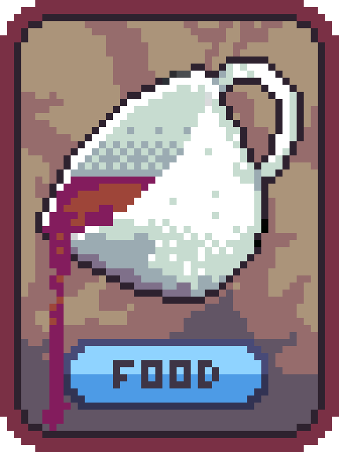
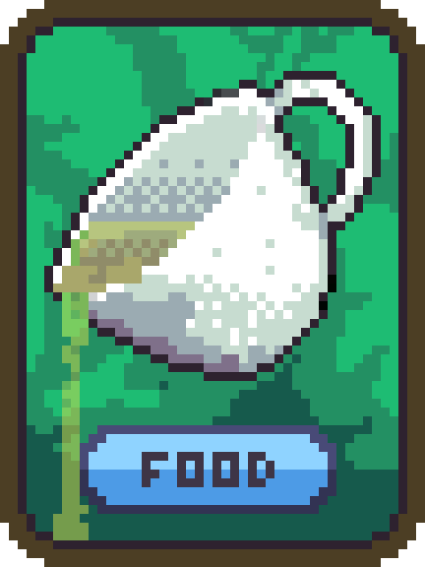
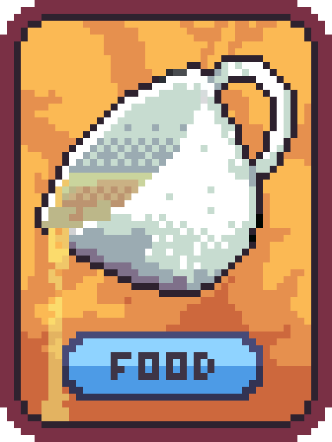
a0.3.7
- Actually removed debug mode
a0.3.6
- Removed card in shop deselecting
- Removed debug mode
- Rebalanced shop prices
a0.3.5
- Fixed XP 8 dying
- Fixed debug mode
a0.3.4
Fixed bomb being in first shop
a0.3.3
More bugs than my basement.
- I think I fixed forge not consuming itself
- You can now use pale potion on magic and food cards
- Fixed all the console errors
- Fixed one wacky healthbar, yay, but monster health is still kind of ridiculous sometimes
- Balanced the thing
- Added bomb for fun
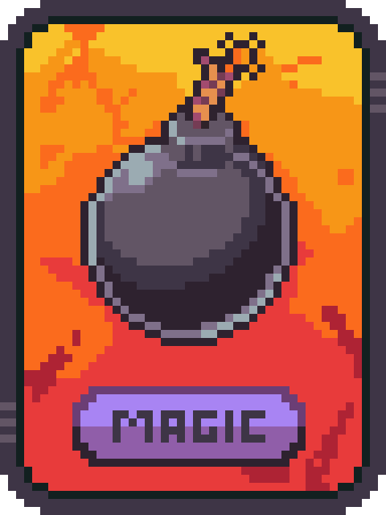
a0.3.2
Version name fix goddamit
a0.3.1
Quick image hotfix
a0.3.0
Ye Olde 0.3.0: The Tiny Man Update!
Here's what's new:
- New cards to add variety,
- Gem (added this in last patch but whatever)
- Pizza - op tomato
- Rusty Bow - variant of rusty sword
- Crossbow - better bow
- Potions
- Scrolls, permanently adding max health
- Shield
- Talon
- 30+ New bosses and shops, but no one reads their descriptions so just trust me that they're in there
- Each monster has its own background!
We're planning on releasing 0.4.0 sometime in the next month (late April, early May)
More fixes:
- Fixed eyeball looking like it was incredibly unnecessarily overpowered
- Fixed red slimeball, then fixed it again for good measure
- Fixed healthbar (it was fun while it lasted)
- Fixed 6-sword glitch
- Fixed lots of bags thing
- Balanced prices
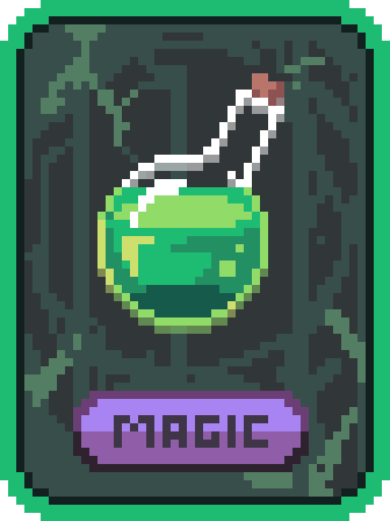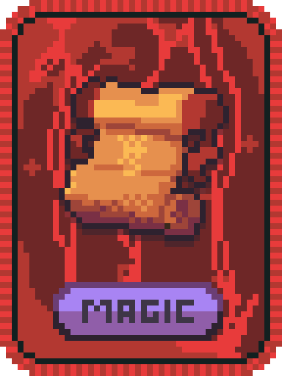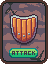
a0.2.4
The Bone Patch (literally all I did was fix the bone. that's it. i forgot what was wrong with it even lol)
a0.2.3
Some rushed fixes and content, sorry for the downtime
- Made git ignore that DS Store
- Fixed eyeball being incredibly unnecessarily overpowered
- "postprocessing"
- added Gem: 2 Damage, gains 2 Damage when played
- added dragon
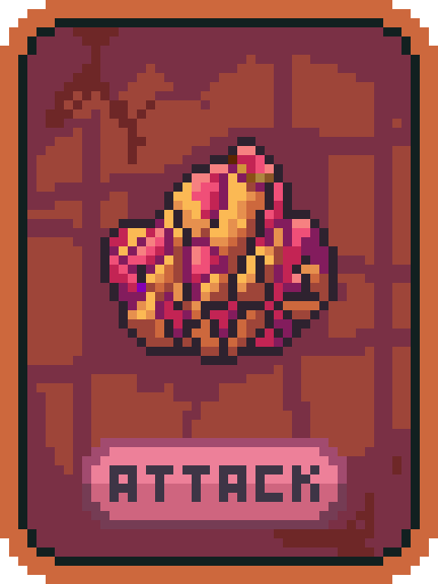
a0.2.2
Fixed starting with a billion flints
a0.2.1
Made the forge actually possible to obtain
a0.2.0
Ye Olde 0.2.0: The Farming Update! (Which is actually mostly devoid of farming).
Here's what's new:
And all the bugfixes:
- several balance changes to attack cards
- enemy damage scales less
- updates to font
- fixed eyeball not taking into account monster level
- fixed frog saying wrong price
- fixed bone attacking thrice
- fixed having too many bags just killing everything
- fixed loot slot code throwing over 10,000 of the exact same error
- who knows what else
Released this a little earlier than I wanted due to the lack of updates. Unrelated, but the Balatro inspiration seems to be slipping in...
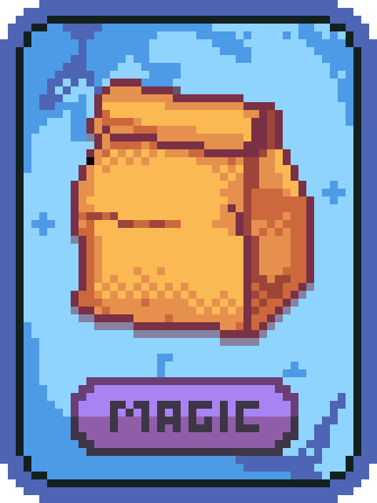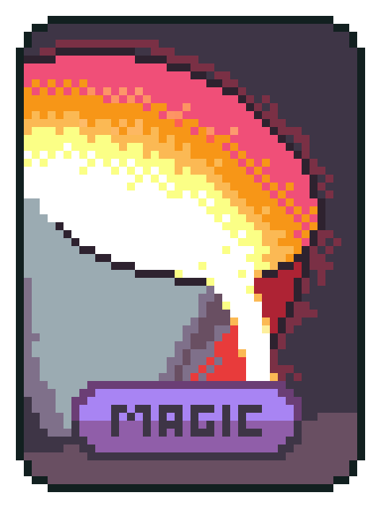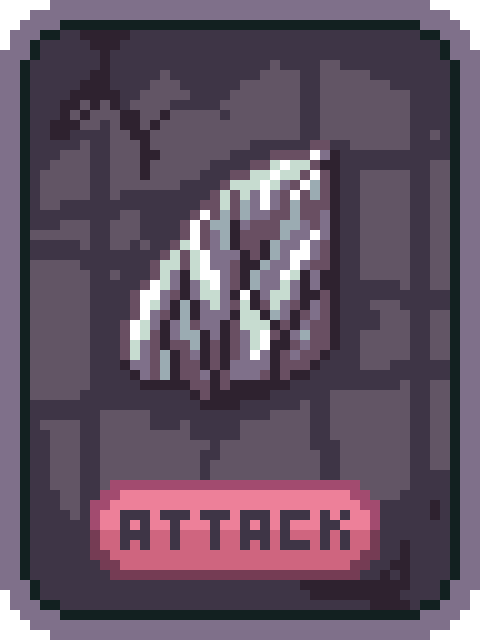
a03-23-25[ 0.1.5 ]
Fixed healthbar because it was annoying
a03-23-25[ 0.1.4 ]
If you look really closely at any of the art in this game, you're gonna find as many mistakes as you would bacteria on a petri dish. - Evan Lee, 2025
- Put prices back to normal (it didn't work as I expected and generally made things not fun)
- Removed negative monster health because it was misleading
- nerfed frog
- added monster stats
- Made health overflow considerably cooler-looking
- told mobile players to go away
- qol: X button in inventory is now sticky (doesn't respond to scroll);
- FIXED: some animations not repeating
- FIXED: carrot sprite being potato
- FIXED: both carrot and tomato giving incorrect health amounts
- FIXED: playing really large and powerful hands kills you
- FIXED: Inventory sound effect
a03-22-25[ 0.1.3 ]
daily update # something
- add: Carrot (that was last update, but I forgot about it)
- add: Tomato
- add: Win SFX
- ⚖️: changed price of most things
- qol: monsters give you less stuff
- qol: buttons can't be pressed while enemy is attacking
- qol: decreased wait time for enemy attack
- fix: glitchy button animations
- fix: Farmer's Market description described a blacksmith
a03-21-25[ 0.1.2 ]
bugfixes and brief farming
a03-21-25[ 0.1.1 ]
Fixed starting with two eyeballs
a03-21-25[ 0.1.0 ]
Ye Olde 0.1.0: The Ample Update! So far you can...
- Fight potentially lethal monsters!
- Collect loot and treasure!
- Upgrade your weapons in safe, friendly-looking shops!
Changelog:
- Added inventory screen
- Added 3 new cards:
- Tea: Heals 40% of total Health
- Potato: Heals 100% of total Health
- Bag: +1 of each card slot available in Shops
- Eyeball: Mimics enemy's attack
- Added new enemies and shops
- Green Toad resprite + price fix
- Fixed "card is undefined" bug + Market Stall not having a food card
What's next?
I have a long spreadsheet of potential new cards, enemies, and shops! Further updates will focus on expanding content, allowing for longer play.
Also, please don't report any bugs. I am aware of most of them.
Have fun!
a03-20-25[ 0.0.18 ]
we might be ready / tons of bugs
Bugfix update + deselecting:
- Finally added deselecting (it looks a little buggy but I'm not a master programmer so I can't fix it)
- Corrected some minor naming issues in the previous updates' descriptions
- Fixed money number not being gold-coloured after buying its card in shop
- Fixed actions not resetting between hands
I know there's still a lot of bugs, but it seems like all that's left is 0.1.0! We might be ready.
a03-19-25[ 0.0.17 ]
i am smart trust me
Fixed the death screen so that it allows you to actually play the game
a03-19-25[ 0.0.16 ]
death + sound
Added sound effects (the least important problem right now), and a death screen
a03-18-25[ 0.0.15 ]
so that didn't work
took four hours to hack together a stupid fix to a play timing thing... but on a better note, frog works, and it doesn't break when you play more than one hand anymore
a03-18-25[ 0.0.14 ]
br/ + oh i'm a liar now?
layout issues
a03-18-25[ 0.0.13 ]
now thats enough for one morning
fixed slimeball, red slimeball, cards not playing in the right order, created bone
a03-17-25[ 0.0.12 ]
versions lol
Added version history to README
a03-17-25[ 0.0.11 ]
oh don't mind the background
I had the background set as an enjoyable rainbow because the programming experience was the opposite (reverted)
a03-17-25[ 0.0.10 ]
INTO ENDLESS
PART 2: made the game states work multiple times in a row. you can now play forever, if you wish.
a03-17-25[ 0.0.9 ]
you can somewhat do another battle
PART 1: halfway through making the game states work multiple times in a row, added juiciness and coincidentally also Juice
a03-16-25[ 0.0.8 ]
now thats a lot of money
Added the shop, title screen, and generally nicened things up a litte
a03-15-25[ 0.0.7 ]
little mini for new beginnings
Neatened the battle view, added hands or something
a12-04-24[ 0.0.6 ]
bugs FIXED!!!
preliminary balance changes, was an idiot and used chatgpt
a11-23-24[ 0.0.5 ]
daily update 3
Added actions, moves, and dealing
a11-22-24[ 0.0.4 ]
select
removed test buttons, added enemy health, ability to select cards, and oversized play button
a11-21-24[ 0.0.3 ]
enemy
added rudimentary enemy
a11-19-24[ 0.0.2 ]
checklist lol
added checklist
a11-19-24[ 0.0.1 ]
cards
init
a11-19-24[ 0.0.0 ]
select
Welcome Thorn